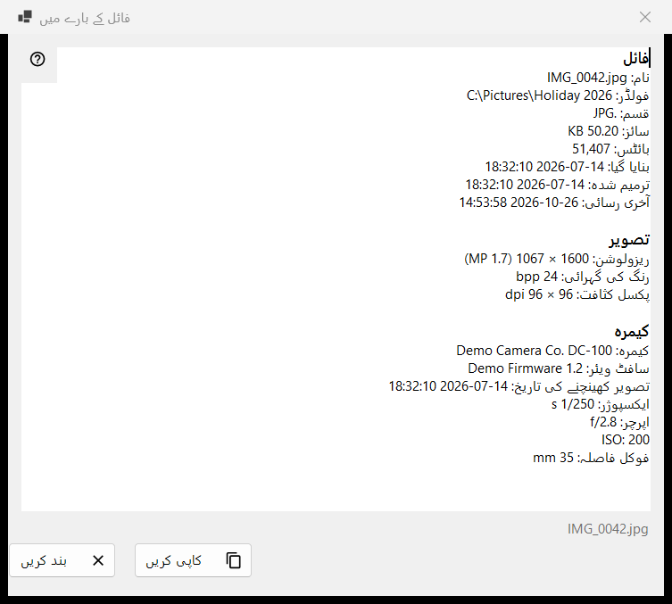
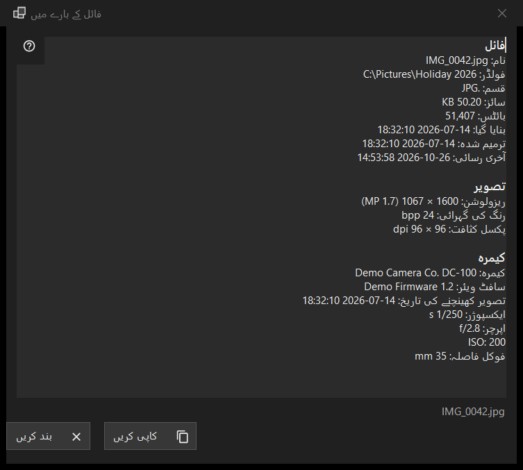

فائل کے بارے میں
یہ کس مقصد کے لیے ہے
اسکرین پر موجود فائل کے بارے میں پروگرام جو کچھ جانتا ہے اس کی صرف پڑھنے والی جھلک: فائل خود، کیمرے کے ڈیٹا کے ساتھ تصویر، دستاویز، اور آڈیو و ویڈیو ٹریک۔ یہ پہلے پینل کے i آئٹم سے، یا ویور مینو کے فائل بلاک میں فائل کے بارے میں سے کھلتی ہے، اور فائل کو ویسا ہی بیان کرتی ہے جیسی وہ کلک کے لمحے پر تھی۔


اس ترتیب میں
- ویور میں کوئی فائل دکھائیں۔
- پہلے پینل کے i آئٹم پر کلک کریں، یا مینو میں فائل کے بارے میں چنیں۔
- ذرا انتظار کریں: اسٹیٹس بار میں فائل کا میٹاڈیٹا پڑھا جا رہا ہے.. لکھا آتا ہے اور قطاریں بھر جاتی ہیں۔
- بلاک پڑھیں، جو چاہیے اسے منتخب کریں، اور پورا متن کلپ بورڈ پر رکھنے کے لیے کاپی کریں دبائیں۔
- بند کریں دبائیں یا Esc۔
عناصر
فائل
ہر فائل میں یہ بلاک ہوتا ہے: نام، فولڈر، قسم، سائز، بائٹس، بنایا گیا، ترمیم شدہ، آخری رسائی اور خصوصیات۔ جس قطار میں دکھانے کو کچھ نہ ہو وہ چھوڑ دی جاتی ہے۔ اگر کوئی فائل کھلی نہ ہو تو اسٹیٹس بار میں کوئی فائل منتخب نہیں لکھا آتا ہے؛ آرکائیو کی عارضی کاپی، دور دراز پتے یا غائب ہو چکی فائل پر فائل دستیاب نہیں آتا ہے، اور کوئی ونڈو نہیں کھلتی۔
تصویر
تصویر کے لیے: ریزولوشن جیسا دکھایا جاتا ہے (فون میں پہلو کے بل محفوظ تصویر سیدھے سائز میں پڑھی جاتی ہے)، رنگ کی گہرائی اور پکسل کثافت، اگر فائل انہیں درج کرتی ہو۔
کیمرہ
تصویر کے EXIF ڈیٹا سے پڑھا جاتا ہے: کیمرہ، سافٹ ویئر، تصویر کھینچنے کی تاریخ، ایکسپوژر، اپرچر، ISO، فوکل فاصلہ اور مصنف۔ نقاط صرف تب نظر آتے ہیں جب تصویر میں GPS ڈیٹا ہو، اور کاپی کریں انہیں بھی شامل کرتا ہے، اس لیے شیئر کرنے سے پہلے متن دیکھ لیں۔
دستاویز
متنی فائل کے لیے: سطریں، الفاظ، حروف اور انکوڈنگ، ساتھ فائل کا صرف کچھ حصہ پڑھا گیا، جب فائل اتنی بڑی ہو کہ پوری نہ پڑھی جا سکے۔ ای بک کے لیے: نام اور مصنف۔ PDF کے لیے: صفحات۔
میڈیا، ویڈیو اور آڈیو
آڈیو اور ویڈیو فائلوں کے لیے ٹیگ (نام، فنکار، البم، سال، ٹریک، انواع، ہدایت کار، سیریز، سیزن، ایپیسوڈ، دورانیہ) اور ہر قسم کا پہلا ٹریک (ویڈیو: ریزولوشن، فی سیکنڈ فریمز، کوڈیک، بٹ ریٹ؛ آڈیو: کوڈیک، چینل، سیمپل ریٹ، بٹ ریٹ) باقی معلومات کے کچھ لمحے بعد شامل ہوتے ہیں، جب میڈیا انجن پڑھنا مکمل کر لیتا ہے۔ ونڈو اس کا انتظار کبھی نہیں کرتی۔ نیٹ ورک اسٹریمز کو ٹریک کی قطاریں نہیں ملتیں۔
کاپی کریں اور بند کریں
کاپی کریں پورا متن کلپ بورڈ پر رکھ دیتا ہے اور اسٹیٹس بار میں کلپ بورڈ پر کاپی ہو گیا لکھا آتا ہے؛ اگر کوئی اور پروگرام کلپ بورڈ کو روکے ہوئے ہو تو یہ بھی بتایا جاتا ہے اور آپ دوبارہ کاپی کریں دبا سکتے ہیں۔ Ctrl+C سے منتخب حصے کی کاپی بھی کام کرتی ہے۔ اگر کچھ پڑھا نہ جا سکا ہو تو باکس میں فائل کی معلومات پڑھی نہ جا سکیں۔ لکھا ہوتا ہے۔ بٹنوں کے پاس اسٹیٹس بار فائل کا نام دکھاتا ہے۔ دوسری فائل پر جانے سے یہ ونڈو نہیں بدلتی: نئی فائل کے لیے دوبارہ i پر کلک کریں۔